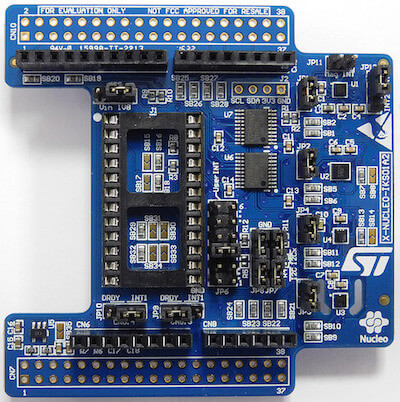

X-NUCLEO-IKS01A2: MEMS Inertial and Environmental Multi sensor shield¶
Overview¶
The X-NUCLEO-IKS01A2 is a motion MEMS and environmental sensor expansion board for the STM32 Nucleo. It is equipped with Arduino UNO R3 connector layout, and is designed around the LSM6DSL 3D accelerometer and 3D gyroscope, the LSM303AGR 3D accelerometer and 3D magnetometer, the HTS221 humidity and temperature sensor and the LPS22HB pressure sensor.
The X-NUCLEO-IKS01A2 interfaces with the STM32 microcontroller via the I2C pin, and it is possible to change the default I2C port.
{kind=link}
More information about the board can be found at the X-NUCLEO-IKS01A2 website 1.
Hardware¶
X-NUCLEO-IKS01A2 provides the following key features:
LSM6DSL MEMS 3D accelerometer (±2/±4/±8/±16 g) and 3D gyroscope (±125/±245/±500/±1000/±2000 dps)
LM303AGR MEMS 3D accelerometer (±2/±4/±8/±16 g) and MEMS3D magnetometer (±50 gauss)
LPS22HB MEMS pressure sensor, 260-1260 hPa absolute digital output barometer
HTS221: capacitive digital relative humidity and temperature
DIL24 socket for additional MEMS adapters and other sensors
I²C sensor hub features on LSM6DSL available
Equipped with Arduino UNO R3 connector
RoHS compliant
- More information about X-NUCLEO-IKS01A2 can be found here:
Hardware Configuration¶
X-NUCLEO-IKS01A2 board connects the various devices on two separate I2C bus:
LSM6DL is on I2C2
LSM303AGR, LPS22HB, HTS221 are on I2C1
X-NUCLEO-IKS01A2 board can be configured in two different ways: Mode 1 and Mode 2
Mode 1: Standard Mode¶
In standard I2C mode the two buses are connected together. As a consequence, all devices on the shield reside on the same I2C bus and are accessible from the main board thru I2C bus.
The jumper configuration to activate this mode is:
JP7 => 1-2, 3-4 (I2C1 = I2C2, I2Cx=GND)
JP8 => 1-2, 3-4 (I2C1 = I2C2, I2Cx=GND)
Mode 2: SensorHub Mode¶
In SensorHub mode LSM6DSL is connected to I2C2 and is accessible from the main board. All the other devices are connected to LSM6DSL master thru I2C1.
The jumper configuration to activate this mode is:
JP7 => 2-3 (I2C1 = I2Cx)
JP8 => 2-3 (I2C1 = I2Cx)
More information about X-NUCLEO-IKS01A2 configuration modes can be found in the X-NUCLEO-IKS01A2 databrief 2
Programming¶
Two samples are provided as examples for x-nucleo-iks01a2 shield:
X-NUCLEO-IKS01A2: shield Standard (Mode 1) sample application, to be used when the shield is configured in Standard Mode
X-NUCLEO-IKS01A2: shield SensorHub (Mode 2) sample application, to be used when the shield is configured in SensorHub Mode
See also Shields for more details.